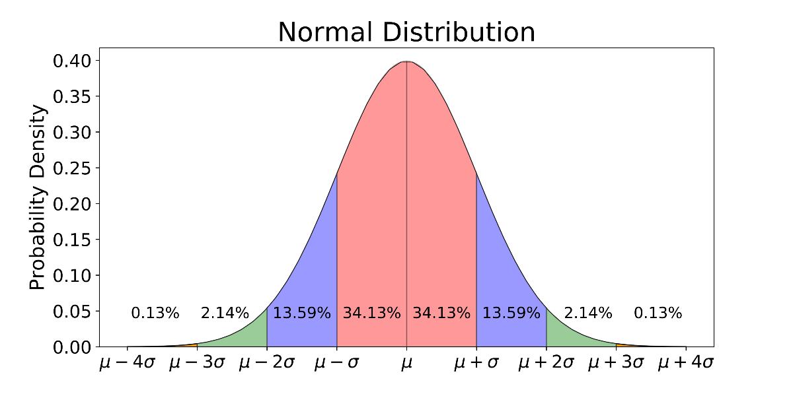

MLE - Linear Regression¶
Previously in linear regression section for calculating the optimal values of parameters of best fit line we defined a loss function. which we were minimising in order to find values of parameters. But we took that loss function intuitively and solved the equation and came up with right values of parameters.In this section we will try to find the loss function that can be used to find optimal values of parameters by a method called Maximum Likelihood Estimation
Introduction¶
In statistics, Maximum likelihood estimation (MLE) is a method of estimating the parameters of a probability distribution by maximizing a likelihood function, so that under the assumed statistical model the observed data is most probable.
Maximum likelihood estimation is a method that determines values for the parameters of a model. The parameter values are found such that they maximise the likelihood that the process described by the model produced the data that were actually observed.
For better and deep understanding you can refer to following - https://shorturl.at/msFI3
Basically we try to find out value of parameters for which likelihood(probability) of that data will be maximum Here we will use this method for Linear Regression.We first required to understand what a probability distribution is.
Probabilty Distributions¶
In probability theory and statistics, a probability distribution is the mathematical function that gives the probabilities of occurrence of different possible outcomes for an experiment. It is a mathematical description of a random phenomenon in terms of its sample space and the probabilities of events (subsets of the sample space).
Types of Distributions :-
Bernoulli Distribution
Uniform Distribution
Binomial Distribution
Normal Distribution
Poisson Distribution
You can read more about probability distributions by refering to the following link - https://en.wikipedia.org/wiki/Probability_distribution
There are many other types of distribution too Here we will use normal distribution.In linear regression we assumed that there is Homoscedasticity which mean that The variance of residual is the same for any value of X. mean Error is random of every given data and is independent.Thus we can assume that the Error is from a normal distribution.
Normal Distribution¶
Normal distribution, also known as the Gaussian distribution, is a probability distribution that is symmetric about the mean, showing that data near the mean are more frequent in occurrence than data far from the mean. In graph form, normal distribution will appear as a bell curve.
In probability theory, a normal (or Gaussian or Gauss or Laplace–Gauss) distribution is a type of continuous probability distribution for a real-valued random variable. The general form of its probability density function is-
\(\large{{\displaystyle p(x)={\dfrac {1}{\sigma {\sqrt {2\pi }}}}e^{-{\frac {1}{2}}\left({\frac {x-\mu }{\sigma }}\right)^{2}}}}\)
\(\large{p(x)}\) = probability density function
\(\large\sigma\)= standard deviation
\(\large\mu\) = mean

Reading more about normal distribution is recommended you can refer to the wikipedia page:
( https://en.wikipedia.org/wiki/Normal_distribution )
,or can refer to these series of video to start of the things (https://shorturl.at/cqxTW ).
As we have discussed we will be assuming error of the model as normally distributed we can assume the values of \(\mu\) and \(\sigma\) for simplification we can assume-
\(\mu=0\)
\(\sigma=1\)
Such normal distribution having above specified values of \(\mu\) as 0 and \(\sigma\) as 1 are called standard normal distribution. Thus Our Error of the model belongs to the standard normal distribution. and have a function like-
\(\large{{\displaystyle p(e)={\dfrac {1}{{\sqrt {2\pi }}}}e^{-{\frac {1}{2}}\left({e}\right)^{2}}}}\)
And will look something like this notice that the mean is Zero-
where, \(\large e\)=Error
We also Know That,
\(\large {e=Y_{true}-Y_{pred}}\)
\(\large{Y_{true}=Y_{pred}+ e}\)
For a given data say \(X_i\) where i goes 1 to n where n is total number of data given to us we can write the above equation’s general form as follows-
\(\large{Y_{true}{i}=Y_{pred}{i}+ e_{i}}\)
Conditional Probability¶
Here as we have now considered the values for a given data say \(X_i\) where i goes from 1 to n (n= total number of data),we also need to write the probility distribution’s equation too defining that, probability whoose value is for a given data is called Conditional probability
Conditional probability is defined as the likelihood of an event or outcome occurring, based on the occurrence of a previous event or outcome. Conditional probability is calculated by multiplying the probability of the preceding event by the updated probability of the succeeding, or conditional, event.
\({P(A|B)}\) is probability of A when B is alredy given or has already occured Therefore the equation of probaility distribution of error will be written like-
\(\large{{\displaystyle p(e_i|X_i)={\frac {1}{{\sqrt {2\pi }}}}e^{-{\frac {1}{2}}\left({e_i}\right)^{2}}}}\)
You can read more about conditinal probability in detail from here -
Proof¶
Asuming for a given fixed data say \(X_i\) we can say that prediction is will be a constant (fixed value) as our model parameters reamain fixed and give same output for same data in a model. For the equation \({Y_{true}{i}=Y_{pred}{i}+ e{i}}\) as \(Y_{pred}{i}\) is constant and for a given data and \(e_i\) belongs to a standard normal distribution from given information and equation we can conclude that \(Y_{true}{i}\) will also belong to a Normal distribution
As for given data say \(X_i\), \(Y_{pred}{i}\) is constant sum of it with \(e_i\) which belongs to a standard normal distribution will result in a normally distributed data but every value will get incresed by \(Y_{pred}{i}\) but resultant distribution will be a Normal distribution.Therfore, for \(Y_{pred}{i}\)’s distribution mean will be \(\large e_i\)’s mean + \(Y_{pred}{i}\) which is equals to \(Y_{pred}{i}\).As every value is getting scaled The standard deviation( \(\large \sigma\)) will remain the same.
Thus,
\(\large{{\displaystyle p(Y_{true}{i}|X_i)={\frac {1}{{\sqrt {2\pi }}}}e^{-{\frac {1}{2}}\left({Y_{true}{i}-Y_{pred}{i}}\right)^{2}}}}\)
Assuming a case of Simple linear regression we know that there will only single feature and single output and it will be estimated by using a 2-D line called best fit line having optimal values of parameters m and c thus,
\(\large{Y_{pred}{i}=m \times X_i+c}\)
Putting value of \(Y_{pred}{i}\) from above equation in distribution’s equation-
\(\large{{\displaystyle p(Y_{true}{i}|X_i)={\frac {1}{{\sqrt {2\pi }}}}e^{-{\frac {1}{2}}\left({Y_{true}{i}-(m \times X_i+c)}\right)^{2}}}}\)
As you can see from above equation probability of \(Y_{true}{i}\) for a given \(X_i\) depends on m and c which are the parameters of our best fit line we can represent this is in equation as follows-
\(\large{{\displaystyle p(Y_{true}{i}|X_i;m,c)={\frac {1}{{\sqrt {2\pi }}}}e^{-{\frac {1}{2}}\left({Y_{true}{i}-(m \times X_i+c)}\right)^{2}}}}\)
Above equation means the probability of \(Y_{true}{i}\) for a given \(X_i\) which depends on the value of m and c.
Considering for every data given¶
Up until now we have derived our every equation for a given value of X sat \(X_i\) where i goes from 1 to n. As, our model is generalised for every value of x in the given data we need to maximise the likelihood of each and every value of X
Therefore,we are required to maximise-
\(\large{p(Y_{true}{1},Y_{true}{2},......Y_{true}{n}|X_1,X_2......X_n;m,c)}\)
When Considering linear regression we took a assumption called Independence Which states that Observations are independent of each other. i.e Value of \(Y_{true}{i}\) is only dependent on \(X_i\) and has no relation with eiether any othe \(Y_{true}\) or \(X\). such events are called Independent events.
Independent events are those events whose occurrence is not dependent on any other event. For example, if we flip a coin in the air and get the outcome as Head, then again if we flip the coin but this time we get the outcome as Tail. In both cases, the occurrence of both events is independent of each other. It is one of the types of events in probability.
If A and B are independent events, then
P(A│B) = P(A)
Using Multiplication rule of probability, P(A ∩ B) = P(B) .P(A│B)
P(A ∩ B) = P(B) .P(A)
You can read more about independent events and it’s properties from here- https://byjus.com/maths/independent-events/
We can use the above discussed observation To write the eqaution of probability distribution like following-
\(\normalsize{p(Y_{true}{1},Y_{true}{2},......Y_{true}{n}|X_1,X_2......X_n;m,c)=p(Y_{true}{1}|X_1) \times p(Y_{true}{2}|X_2) \times ......p(Y_{true}{n}|X_n)}\)
Which can be written like-
\(\normalsize{p(Y_{true}{1},Y_{true}{2},......Y_{true}{n}|X_1,X_2......X_n;m,c)=\prod_{i=1}^n p(Y_{true}{i}|X_i;m,c)}\)
Therefore now we have to maximize the foolowing term-
\(\large{\prod_{i=1}^n p(Y_{true}{i}|X_i;m,c)}\)
We know that,
\(\large{{\displaystyle p(Y_{true}{i}|X_i;m,c)={\frac {1}{{\sqrt {2\pi }}}}e^{-{\frac {1}{2}}\left({Y_{true}{i}-(m \times X_i+c)}\right)^{2}}}}\)
Therfore, We have to maximise :-
\(\large{\prod_{i=1}^n {\frac {1}{{\sqrt {2\pi }}}}e^{-{\frac {1}{2}}\left({Y_{true}{i}-(m*X_i+c)}\right)^{2}}}\)
Taking Log
The above derived expression has products(\(\prod\)) and exponential term in it we can take the log of the whole expression to simplify things as according to property of log-
\(log(e)=1\)
\(log(a^n)=n*log(a)\)
\(\normalsize{log(a_1*a_2*a_3.....a_n)=log(a_1)+log(a_2)+log(a_3).....+log(a_n)}\)
The Equation can be also written as-
\(\normalsize{log(\prod_{i=1}^n a_i)=\sum_{i=1}^n log(a_i)}\)
But will taking log effect our answer?
Answer no, beacuse we are not intrested in the actual maximum value as in MLE we maximise the likelihood and find that value of parameters on which maximum was achieved not the maximum value.As, log is a monotonically increasing function i.e. A function is one that increases as x does for all real x. you can read more monotonic finction from here (https://en.wikipedia.org/wiki/Monotonic_function)
As, we are only intrested in value of paramters and the maximisation of likelihood(Probability function) when applied log due to it’s property(monotonically increasing) the new function will achieve it’s maximum value at the same value of parametrs.maximum value might get changed but we are not worried about that.
After applying log and using above specified equations-
\(\large{\sum_{i=1}^n {log(\frac {1}{{\sqrt {2\pi }}})}-{\frac {1}{2}}\left({Y_{true}{i}-(m \times X_i+c)}\right)^{2}}\)
using the proprety if summation-
\(\large{\sum_{i=1}^n {log(\frac {1}{{\sqrt {2\pi }}})}-\sum_{i=1}^n{\frac {1}{2}}\left({Y_{true}{i}-(m \times X_i+c)}\right)^{2}}\)
As first term of the above equation is constant therefore-
\(\large{n \times {log(\frac {1}{{\sqrt {2\pi }}})}-\sum_{i=1}^n{\frac {1}{2}}\left({Y_{true}{i}-(m \times X_i+c)}\right)^{2}}\)
Now,we know that we have to maximize the above expression in order to find the value of parameters of our best fit line (m and c).
\(\large{n \times {log(\frac {1}{{\sqrt {2\pi }}})}-\sum_{i=1}^n{\frac {1}{2}}\left({Y_{true}{i}-(m \times X_i+c)}\right)^{2}}------Maximise\)
Looking closely on the above expression we can notice that it has two terms and to maximise whole expression we have to maximise the indivisual term as you can see the first term is constant and will have not have any effect on the maximisation of the expression therefore in order to maximise the likelihood we have to maximise the second term which is:-
\(\normalsize{-\sum_{i=1}^n{\frac {1}{2}}\left({Y_{true}{i}-(m \times X_i+c)}\right)^{2}}------Maximise\)
As you can see there is a negative sign associated with it thus maximising the whole term will mean to minimise the mod of the term-
\(\normalsize{\sum_{i=1}^n{\frac {1}{2}}\left({Y_{true}{i}-(m \times X_i+c)}\right)^{2}}------Minimise\)
Conclusion¶
Observing carefully the expression \(\sum_{i=1}^n{\dfrac {1}{2}}\left({Y_{true}{i}-(m \times X_i+c)}\right)^{2}\) we can notice that it is nothing but our loss function that we took in the beginning of the linear regression module there we took it intuitively and minimised it here we got it by mathematical proof.Therefore we can say that-
\(\normalsize{Loss=\sum_{i=1}^n{\dfrac {1}{2}}\left({Y_{true}{i}-(m*X_i+c)}\right)^{2}}\)
Here, You will observe as extra (1/2) term associated with it but again we are not worried about the minimum value of the loss but the value of parameters of our best fit line- m and c when loss is minimum. extra 1/2 term will just sacle the value of loss by itself but will no effect on optimal values of the parameters.
Now as we have mathematically proved that our loss function is correct and we have to minise it in order to find the optimal values of the parameters best fit line. we can use the method discussed in the linear regression section to find the formulae of m and c and verify it.
Hence we used Maximum likelihood estimation and successfully solved and found out relation between parameters succesfully.
Further Reading¶
https://en.wikipedia.org/wiki/Monotonic_function)
https://byjus.com/maths/independent-events/